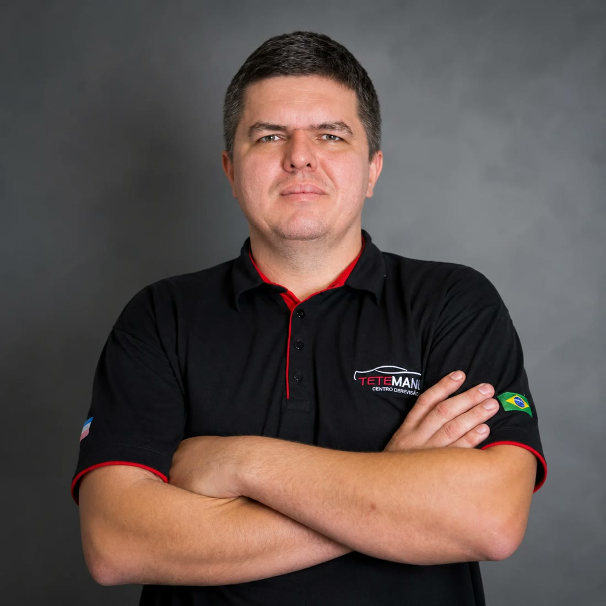
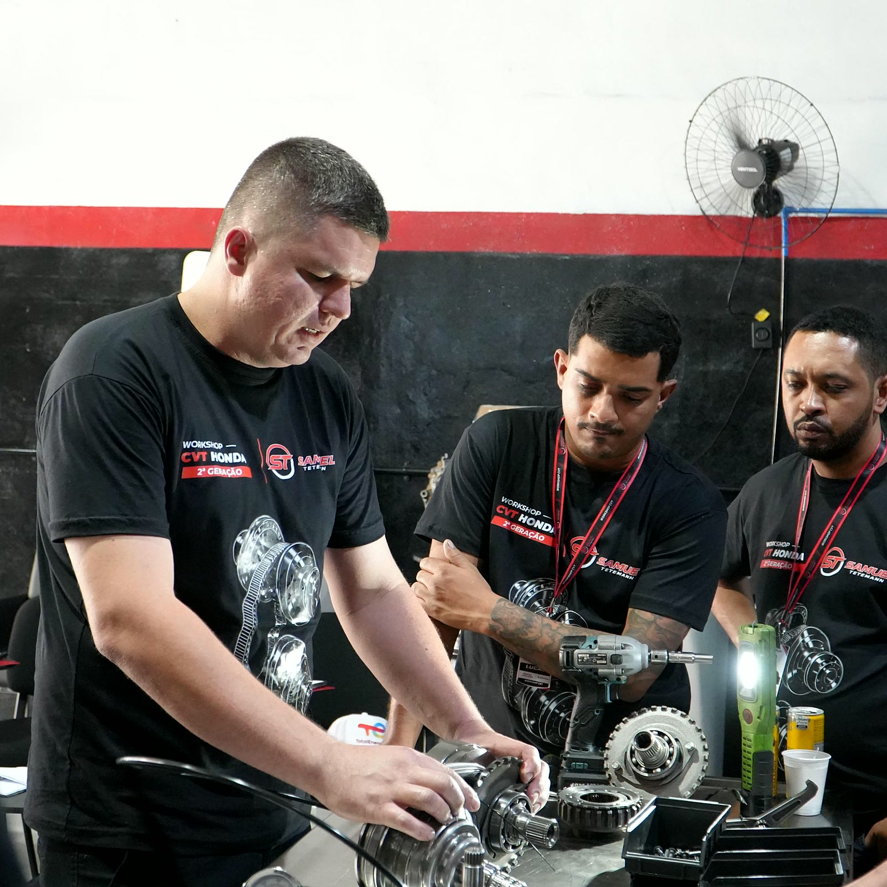
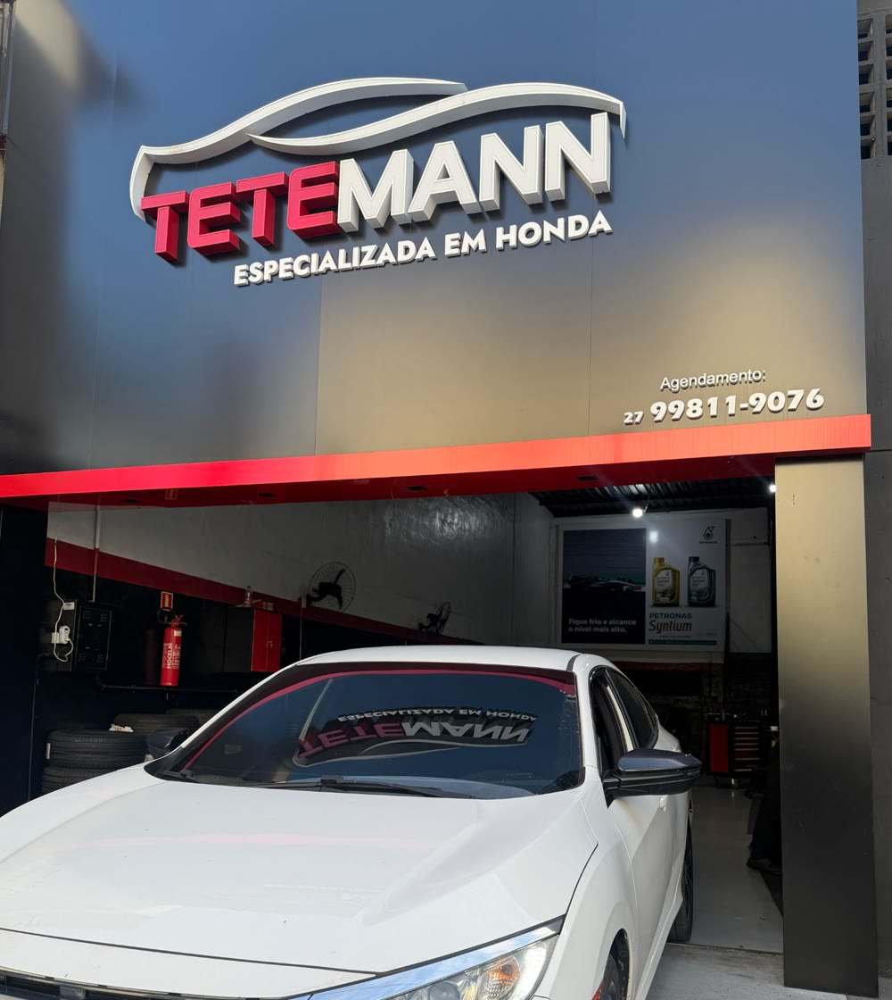

Eu achava que o câmbio CVT era um bicho de sete cabeças. Depois do dia de hoje eu vi que não é tão complicado assim.Gabriel RossmannParticipante da 1ª turma
Workshop presencial · 2ª turma
WorkshopCVT Honda2ª Geração
Um dia inteiro na bancada com Samuel Tetemann: como o câmbio funciona, como diagnosticar sem chutar, quais peças usar e como reparar — com o câmbio aberto na sua frente.
DataSáb, 19/12/2026
Horário7h30 às 17h30
LocalTetemann Centro de Revisões · Serra/ES
Turma reduzida para todo mundo acompanhar a bancada de perto.

Samuel Tetemann
Especialista em Honda · mais de 20 anos de oficina
Como foi a 1ª turma do Workshop CVT Honda 2ª Geração
O workshop começa em
--dias
--horas
--min
--seg
Quem fez a 1ª turma
Chegaram com dúvida.
Saíram mexendo no câmbio.
Depoimentos gravados no dia do workshop, logo depois da última aula.
Um excelente treinamento, um excelente professor. Já estou até esperando o próximo treinamento com o Samuel.Elves OliveiraParticipante da 1ª turma
Cheguei aqui leigo. Hoje eu tive teoria e prática, e posso dizer que saí daqui 90% capaz de fazer um câmbio.Francineudo MendesParticipante da 1ª turma
← arraste para ver os outros depoimentos →
Por que esse workshop existe
O CVT Honda está em toda oficina. A informação certa, não.
Fit, City, HR-V, WR-V, Civic: a frota com CVT não para de crescer, e o carro chega na sua porta. Sem o procedimento certo, o serviço volta — e quem paga a conta é a oficina.
Samuel foi pessoalmente à China atrás de peças de reposição para o CVT Honda. No workshop ele mostra, com a peça na mão, o que funciona de verdade e o que só parece funcionar.
- Diagnóstico no chute. Sensor mal interpretado vira câmbio aberto sem necessidade.
- Peça que parece igual, mas não é. A diferença só aparece depois, quando o carro volta.
- Retrabalho em garantia. Horas de bancada perdidas e o nome da oficina em jogo.
- Serviço recusado por insegurança. Cliente de CVT indo embora para o concorrente.
Programação do dia
Você desmonta e monta um CVT do início ao fim
No workshop, você faz a desmontagem e a montagem de um câmbio CVT completo, com as ferramentas na mão e o câmbio aberto na sua frente. Abaixo, uma prévia do que acontece em cada módulo. O conteúdo completo, com os procedimentos, está no curso.
☕
7h30 · Café da manhã e credenciamento
01
Módulo 1: Conceitos do CVT, modelos de transmissão, sensores e diagnósticos assertivos
- Conceitos do CVT: relação contínua, sem marchas fixas, e como as polias variáveis trabalham juntas
- Como a polia variável secundária completa essa variação, e o que o seu comportamento revela
- Os modelos de transmissão que você vai encontrar na oficina e as diferenças entre eles
- Os sensores do câmbio: como testar cada um e separar a falha atual da intermitente
- Diagnóstico pelo scanner: o que o código revela, o que ele esconde e como chegar à causa
- Conversor de torque: como o carro para sem desligar o motor e por que ele trava em velocidade
02
Desmontagem completa: peças de qualidade, peças que dão dor de cabeça NA PRÁTICA
- Identificação de peças de qualidade e das peças suspeitas que costumam voltar para a oficina
- Desmontagem completa do câmbio, do início ao fim, com dicas das ferramentas que tornam o serviço mais seguro
- As vedações que devem ser substituídas em toda revisão, e por que elas fazem a correia patinar
🍽
Pausa para almoço
03
Corpo de válvulas, solenoides e ajustes NA PRÁTICA
- Corpo de válvulas: o que cada válvula controla dentro do câmbio
- Solenoides: como medir com multímetro e saber, na hora, se a peça está boa
- Ajustes na montagem: a folga do eixo de entrada e a remontagem conferida etapa por etapa
04
Fluido recomendado, capacidade e filtros NA PRÁTICA
- Fluido recomendado e por que o fluido errado derruba o câmbio, mesmo quando parece igual ao certo
- Capacidade de fluido em cada transmissão, e por que o tempo de gotejamento muda essa conta
- Avaliação dos filtros da transmissão: quando trocar e os que a maioria esquece
05
Erros que fazem o carro voltar em garantia
- Os erros de peça e de procedimento que mais geram retorno
- Por que o teste de rodagem é o que separa um serviço bem feito de um retorno
O que está incluso
Tudo para você sair aplicando
Dia inteiro de aula
Teoria e prática das 7h30 às 17h30, com câmbio aberto na bancada.
Material de apoio
Conteúdo exclusivo para consultar depois, na sua oficina.
Certificado
Certificado de participação do Workshop CVT Honda 2ª Geração.
Coffee break
Café da manhã de recepção e coffee break durante o dia.

Seu instrutor
Samuel Tetemann não ensina teoria. Ensina o que consertou.
Quem trabalha com Honda na região já sabe: quando o problema é Honda, é o Samuel que resolve. À frente da Tetemann Centro de Revisões, ele vive o CVT na bancada todos os dias — e foi até a China conhecer de perto os fornecedores de peças de reposição para esse câmbio.
+20anos de manutenção Honda
+10 mildiagnósticos Honda realizados
2ªturma do workshop de CVT
Onde vai ser
Dentro da oficina, onde o CVT é consertado todo dia
O workshop acontece na própria Tetemann, oficina especializada em Honda. Você aprende no mesmo ambiente, com as mesmas ferramentas e bancadas usadas nos reparos de verdade.
- LocalTetemann Centro de Revisões · Serra/ES
- QuandoSábado, 19/12/2026 · 7h30 às 17h30
- Endereço completoEnviado pelo WhatsApp após a confirmação da inscrição

Público
Esse workshop é pra você?
É pra você se…
- É mecânico ou dono de oficina e recebe Honda com CVT
- Já tem noção de câmbio automático e quer dominar o CVT Honda
- Cansou de perder tempo e dinheiro com diagnóstico errado
- Quer ser a referência em CVT na sua cidade
Não é pra você se…
- Não pretende trabalhar com transmissão CVT
- Procura só teoria: aqui boa parte do dia é com a peça na mão
- Não pretende colocar em prática os conteúdos ensinados aqui
Inscrição
Garanta sua vaga na 2ª turma
Preencha seus dados e finalize pelo WhatsApp com a equipe da Tetemann.
Investimento · valor único
- Sábado, 19/12/2026 · 7h30 às 17h30
- 5 módulos de teoria e prática com câmbio aberto
- Material de apoio exclusivo
- Certificado de participação
- Café da manhã e coffee break
Vagas limitadas. A turma é reduzida para que todos acompanhem a bancada de perto — a vaga é confirmada após o pagamento.
Dúvidas
Perguntas frequentes
Preciso ter muito conhecimento em câmbio automático?
Não precisa ser especialista. O workshop é para profissionais que já têm alguma noção de como funciona um câmbio automático e querem entender o CVT Honda de verdade. Na 1ª turma teve participante que chegou só com a teoria e saiu fazendo.
O conteúdo é o mesmo da 1ª turma?
A base é a mesma programação que foi aprovada por quem participou em julho, agora com mais meia hora de aula. Se você já fez a 1ª turma, fale com a gente pelo WhatsApp antes de se inscrever.
Onde vai acontecer?
Na Tetemann Centro de Revisões, em Serra/ES, com toda a estrutura para as aulas práticas. O endereço completo é enviado pelo WhatsApp após a confirmação da inscrição.
Como funciona o pagamento?
O que está incluído?
Dia inteiro de aula teórica e prática, material de apoio exclusivo, certificado de participação, café da manhã de recepção e coffee break.
Venho de outra cidade. Vale a pena?
O workshop foi concentrado em um único sábado justamente para quem vem de fora conseguir participar sem parar a oficina durante a semana. Pelo WhatsApp a gente te passa a localização e tira qualquer dúvida de como chegar.
E se as vagas acabarem?
A turma é reduzida. Se fechar antes de você garantir a sua vaga, você entra na lista de prioridade e é avisado primeiro quando abrir uma nova data.
Dia 19 de dezembro, seu lugar é na bancada.
Um sábado para aprender com quem conserta CVT Honda todos os dias — e voltar para a oficina atendendo melhor e cobrando com segurança.